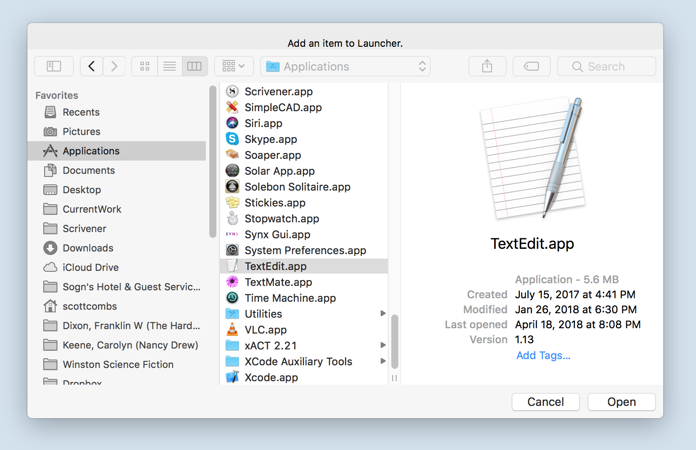
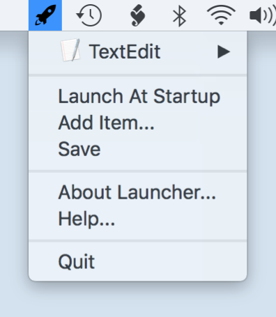
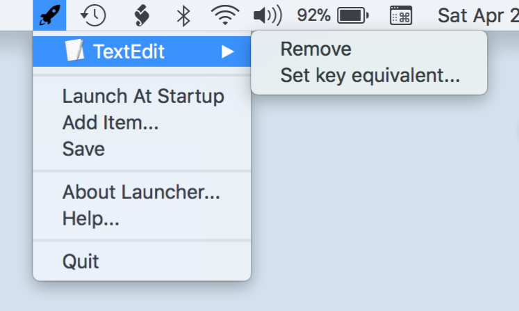
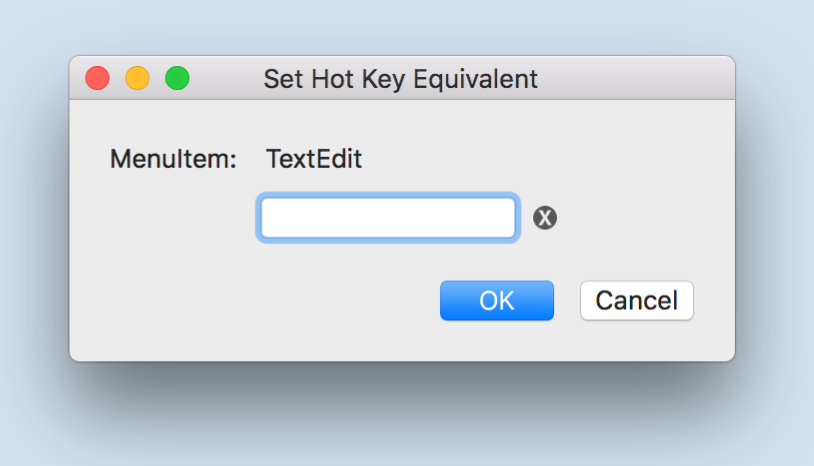
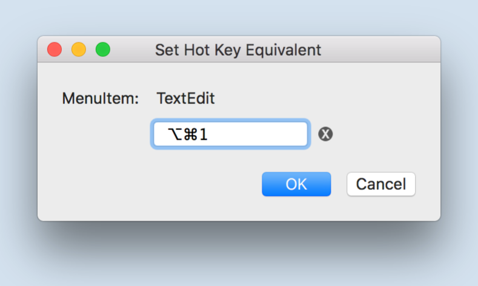
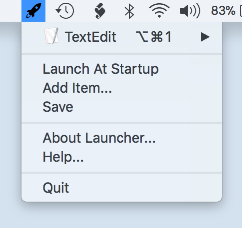

How to use Launcher?
The missing tool Apple didn't provide.
Add an Item
Adding and setting a global hotkey
Removing an Item
Removing unwanted items. Removing a global hotkey.
How Launcher works?
The specifics and tips for special cases.
Troubleshooting
What may go wrong and how to avoid issues.
Launcher Help
Adding an item is easy. Just select Add item... from the menu and navigate to your application or file. When done, you will have created a new menu item in Launcher.
For an example we will add TextEdit to Launcher.
Click Add item... and go to your Applications Folder and select TextEdit and then click Open.
Now Launcher looks like this.
Notice the arrow pointing to the right of the TextEdit item. This indicates a submenu. In the submenu you will find a Remove and Set key equivalent... item.
Selecting the Remove will remove the TextEdit item from Launcher.
Selecting the Set key equivalent... item will present a dialog for you to set your global hotkey.
Here you will see that the menuitem in question is TextEdit.
Global hotkeys can conflict with other applications hotkeys. For example: Microsoft Word uses Command-Control-V for a Special Paste. If you selected Command-Control-V for TextEdit's global hotkey and you were in Microsoft Word, both operations would happen. Therefore, try to use uncommon hotkey combination for your global hotkeys.
Let's use Command-Option-1 for TextEdit.
Now Launcher and TextEdit looks like this.
That's it! Now you can launch TextEdit anywhere with its new global hotkey. Enjoy. Add all your favorites in one place and see how much time you save when hunting for the right file or application.